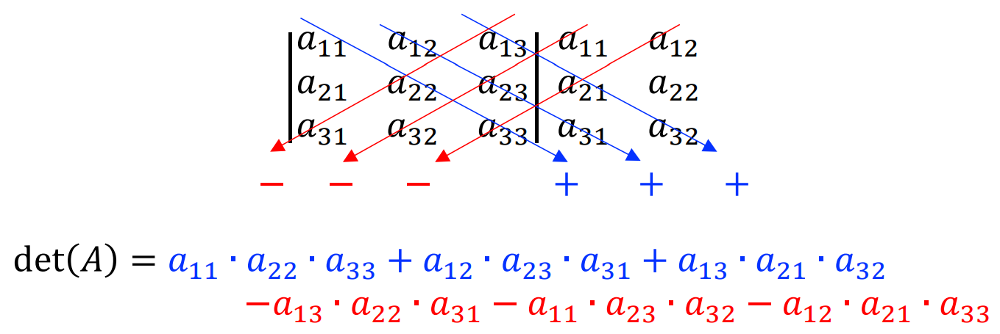
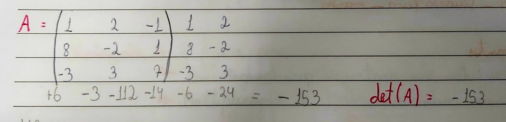

Todo matriz está associada a um número real chamado de determinante, representado por det(A) ou |A|, obtemos através de operação entre os elementos da matriz. Para cada tamanho de matriz temos um forma de calcular:
Em uma matriz que possui apenas um elemento, seu determinante é o próprio número. Ou seja, a Matriz A = [-2] então o determinante dela será det(A) = -2.
Em uma matriz de ordem 2, o determinante é a diferença entre a multiplicação dos elementos da diagonal principal, com a multiplicação dos elementos da diagonal secundária.
Para calcular o determinante de uma matriz 3 x 3, devemos usar a REGRA DE SARRUS:
Passo 1 - Repetir a 1° e 2° coluna no lado direito da matriz;
Passo 2 - Multiplicar os elementos de cada diagonal e somar os produtos. Nas diagonais paralelas a principais mantemos o sinal, nas diagonais paralelas à diagonal secundária, invertemos o sinal multiplicando por (-1).
Determinante de matriz quadrada de ordem 3, disponibilizado pela professora Dra. VALÉRIA ESPÍNDOLA LESSA, no material didático: MD3 - DETERMINANTES, na página 2, disponível no SIGAA, para a turma de informática do segundo ano, de 2024, do IFRS, Campus Erechim.
Para calcular um determinante de uma matriz quadrada de ordem 4 ou maior, devemos, primeiramente, transformar essa matriz em uma matriz de ordem 3, para então calcular o determinante da matriz pela REGRA DE SARRUS.
Para transformar uma matriz de ordem 4 para a ordem 3, usamos a REGRA DE CHIÓ. Essa mesma regra é usada para transformar uma matriz de ordem 5 para uma matriz de ordem 4, para então transformar em uma matriz de ordem 3 para finalmente calcular o determinante pela regra de sarrus. Seguindo os seguintes passos:
Passo 1 - O elemento a11 da matriz A deve ser igual a 1, para então suprimir a primeira linha e coluna da matriz. Para que o elemento a11 = 1, podemos mover as linhas ou as colunas de posição, mas não podemos esquecer que cada mudança feita na matriz, o determinante terá seu sinal trocado.
Em um exemplo: Se o elemento a12 da matriz for igual a 1, e o a11 não for, podemos inverter as colunas 1 e 2. Porém, o sinal do determinante também será trocado, então podemos também trocar as linhas 3 e 4, então o sinal do determinante sairá sem o sinal modificado.
Passo 2 - Na nova matriz, devemos subtrair o produto dos elementos que estão na linha e coluna, cortados anteriormente.
Determinante de matriz quadrada de ordem 4, disponibilizado pela professora Dra. VALÉRIA ESPÍNDOLA LESSA, no material didático: MD3 - DETERMINANTES, na página 8, disponível no SIGAA, para a turma de informática do segundo ano, de 2024, do IFRS, Campus Erechim.